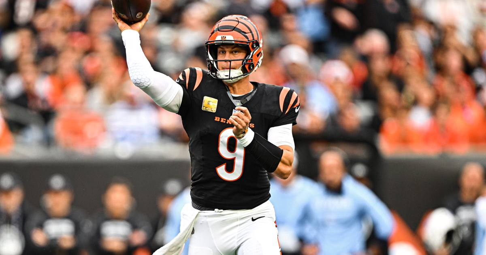

Joe Burrow Does Everything: 462 Yards, Six Touchdowns, and an OT Winner as Bengals Outlast Titans 43-36
Joe Burrow threw for 462 yards and five touchdowns, then ran in the overtime winner himself, as Cincinnati survived Tennessee 43-36 after trailing 13-0.

Joe Burrow was brilliant, reckless, and finally inevitable all in the same afternoon. The Cincinnati quarterback threw for 462 yards and five touchdowns, threw three interceptions, and then won the game with his legs, scrambling in from nine yards out in overtime to give the Bengals a 43-36 win over the Tennessee Titans at Paycor Stadium on Sunday.
Six touchdowns total. Four hundred seventy-two total yards. And a win Cincinnati had to steal twice.
The hole
This did not start like a Burrow masterpiece. Tennessee jumped out 13-0 in the first quarter, and an early Burrow interception in Titans territory turned into points the other way. The Bengals were scoreless after one quarter, and the building had that nervous quiet that shows up when a heavy favorite starts pressing.
Then Burrow started dealing. He climbed the pocket on third-and-18 early in the second quarter and fired a dart to Ja'Marr Chase in the end zone for a 30-yard touchdown, Chase's 60th career score. Late in the first half, Burrow found rookie tight end Jack Endries for a one-yard touchdown, the first catch and first score of Endries' NFL career, and Cincinnati had its first lead of the day.
The chaos in the middle
The third quarter was pure Bengals-Titans weirdness. Boye Mafe strip-sacked Cam Ward, Dexter Lawrence II scooped up the fumble and returned it eight yards, and on the very next snap Burrow threw his 175th career touchdown pass, a 17-yarder to Tee Higgins near the front pylon. In his 84th career regular-season game, Burrow became the third-fastest quarterback in NFL history to 175 scoring passes, behind only Patrick Mahomes (72 games) and Dan Marino (76).
Later in the third, Lawrence and linebacker Demetrius Knight Jr. teamed up to stop Tony Pollard in the Tennessee end zone for a safety, Cincinnati's first forced safety since Week 5 of 2024, and the Bengals led 23-21.
Nothing stayed settled. Tennessee kept answering, and the fourth quarter turned into a shootout.
The fourth quarter and overtime
Burrow found Mike Gesicki up the seam for a 25-yard touchdown midway through the fourth to put Cincinnati ahead 29-28. It was Gesicki's fifth straight game with a touchdown catch, the longest streak by a tight end in Bengals history, and Burrow's fourth touchdown pass of the day, his third consecutive game with at least four.
Tennessee answered again. So Burrow answered again, connecting with Higgins for an 18-yard touchdown to tie the game at 36. That was Burrow's fifth touchdown pass of the day, tying his single-game career high and his third career game with five scoring throws.
Overtime belonged to him completely. Cincinnati took the kick, went 70 yards in five plays, and Burrow finished it himself with a nine-yard touchdown run for the 43-36 lead. The Bengals defense then forced a turnover on downs to seal it.
The numbers, and the history
The final line: 38-of-48 for 462 yards, five touchdowns, three interceptions, plus three carries for 10 yards and the winning score. Higgins caught 10 passes for 155 yards and two touchdowns, his 18th career 100-yard game. Chase caught 11 for 141 and a score, and his 60th career touchdown put him in rare company: just the fourth player in the Super Bowl era with 60 or more touchdown catches in his first 85 games, joining Jerry Rice (77), Rob Gronkowski (67), and Randy Moss (66).
Burrow also passed Carson Palmer for fourth place on the Bengals' all-time passing yards list, moving his career total to 22,925. Only Ken Anderson (32,838), Andy Dalton (31,594), and Boomer Esiason (27,149) sit ahead of him now.
For Tennessee, Cam Ward threw for a career-high 304 yards and two touchdowns, and Pollard ran 21 times for 117 yards and two scores. It was not enough against a quarterback who refused to let the game go.
Cincinnati improves to 5-2. Tennessee falls to 1-7. The Bengals head to Madrid next week to face the Atlanta Falcons, and Burrow heads there as the quarterback who just put up 462 yards, six touchdowns, and the winner, turnovers and all.
Sources
• ESPN box score, Titans at Bengals, November 1, 2026 (event 401873031)
• Cincinnati Bengals official postgame recap and notes, November 1, 2026
• NBC Sports and SI postgame coverage, November 1, 2026
Gear up: Fanatics